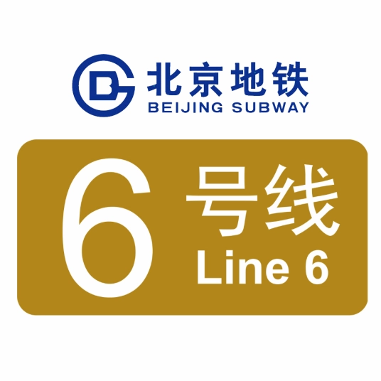
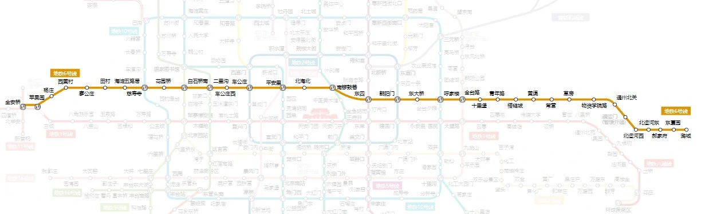
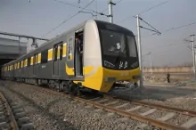

线路走向

车辆设施
DKZ47

北京地铁6号线采用长春轨道客车股份有限公司研制的DKZ47型列车（64组，车号：06 001-06 064） [36] ，使用8节编组B型列车（“六动两拖”，6M+2T），采用不锈钢车体。与2010年制造的DKZ31、DKZ32、DKZ33（分别用于北京地铁15号线、北京地铁亦庄线、北京地铁9号线）相比，该车使用1500伏特接触网供电，可以保障列车的供电性能，与DKZ33不同，北京地铁6号线列车并未有安装“黑匣子”，但却拥有1时15分的超长时间供电。列车与DKZ33唯一的相同点是可以从刹车摩擦与缓冲摩擦吸取电能。列车最高运行时速每小时100千米，旅行时速为每小时50至60千米。列车全列定员1976人，比普通6辆编组列车多承载400人。列车外观黑色底色，腰部涂有黄线，车头黄色和黑色搭配，昵称为大黄蜂。